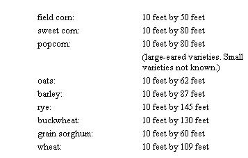
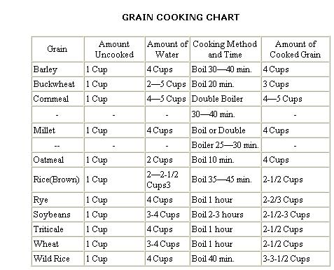

I remember the first year we grew grains in our garden. A good gardening buddy dropped by one day early in July just when our wheat was ripe and ready to harvest. He didn't know that though. His reason for stopping was to show me two splendid, juicy tomatoes picked ripe from his garden. After a few ritual brags - and knowing full well that my tomatoes were still green-he asked me in a condescending sort of way what was new in my garden. I remembered the patch of ripe wheat. "Oh, nothing much," I answered nonchalantly, "except the pancake patch."
"The pancake patch?" he asked incredulously.
"Yeah. Sure. Until you've tasted pancakes fresh from the garden, you haven't lived."
"And where might I find these pancakes growing?" he queried sarcastically, to humor my madness.
"Right up there behind the chicken coop in that little patch of wheat. All you have to do is thresh out a cupful or two, grind the grain in the blender, mix up some batter, and throw the whole thing into the skillet. Not even Aunt Jemima in all her glory can make pancakes like those."
My friend didn't believe me until I showed him, step by step. We cut off a couple of armloads of wheat stalks, flailed the grain from the heads onto a piece of clean cloth (with a small plastic baseball bat!), winnowed the chaff from the grain, ground the grain to flour in the blender, made batter, and fried pancakes. Topped them with real maple syrup, Sweet ecstasy. My friend forgot all about his tomatoes.
The next year, he invited me over for grain sorghum cookies, proudly informing me that grain sorghum flour made pastries equal to if not better than whole wheat flour. Moreover, grain sorghum was easier to thresh. I had not only made another convert to growing grains in the garden, but had made one who quickly taught me something.
The reason Americans find it a bit weird to grow small plots or rows of grain in gardens is that they are not used to thinking of grains as food directly derived from the plant, the way they view fruits and vegetables. The North American, unlike most of the world (especially Asians and Africans), thinks grain is something manufactured in a factory somewhere. Flour is to be purchased, like automobiles and pianos. Probably the attitude came from the practice of hauling grains to the gristmill. Without the convenience of today's small power grinders and blenders, overworked housewives of earlier times were only too glad to have hubby haul the grain to the gristmill. And that gave him an excuse to sit around all day at the mill talking to his neighbors.
But even with the advent of convenient kitchen aids to make grain cookery easier, the American resists. He will work hard at the complex task of making wine - seldom with success - but will not grind whole wheat or corn into nutritious meal, a comparatively easy task. I know, because I was that way myself. Until I saw with my own eyes how practical a good 10-speed blender was for flour-making, I hesitated. Now it boggles my mind to remember that for most of my life I lived right next to acres and acres of amber waves of grain, where combines made the threshing simplicity itself, and yet our family always bought all our meal and flour.
The real tragedy of that ignorance was that the flour we purchased usually was the kind that had been degerminated and debranned too. Most of the nutrition had been taken out of that flour to give the American housewife what she seemed to want: a pure white powder that would last indefinitely on the shelf and make pastries of fluffy, empty calories.
The nutrition picture for whole grains is getting better all the time, thanks to the progress being made by plant geneticists. One of the more dramatic developments has been Opaque-2 or high lysine corn, corn with almost twice the normal amount of the proteins, lysine, and tryptophan in it. The other is triticale, a cross between wheat and rye which outyields wheat, oats, rye, and barley, and has more protein than ordinary corn. New varieties of oats, long known as the grain with the highest protein (excluding legume seeds like soybeans), range as high as 17 percent protein content. But studies of new buckwheat varieties have prompted the Agricultural Research Service to announce that this traditional crop, now making a comeback, has an amino acid composition nutritionally superior to all cereals, including oats.
Almost all the grains can be sprouted to make delicious salads in some ways more nutritious than the dried grain. Beans, clover (especially alfalfa), and wheat make the best sprouts for humans, But oats and barley - in addition to wheat - can be sprouted and fed to chickens and livestock as top farmers used to do. With that kind of feed supplement, they could grow healthy animals even in winter without today's expensive all-vitamins-included commercial feed.
Corn sprouts win no prize for taste, but corn makes up for that lack with other advantages. Sweet corn and popcorn are two of our most popular foods, but corn can also be parched, pickled (corn salad), or made into hominy.
Pioneers in the Corn Belt survived some winters almost totally on corn. They cracked, ground, grated, boiled, parched, squeezed, flaked, and baked it into porridges, cakes, muffins, dodgers, and "pone".
I don't like whiskey much, but the best I ever tasted was moonshine "made right" from fermented corn mash. That bourbon easily surpassed in mellowness the most expensive firewater you can buy. Of course, other grains make other kinds of whiskey, and malt from malting barley, a leading crop in the northernmost states, is used for beer and other malt foods and drinks.
But the use of whole grains directly in your own diet is only half the reason for growing them. The other half, just as important I think, is to assure yourself and your family an economical, steady supply of milk, meat, and eggs, and possibly cheese, wool, or other animal products you need or desire as part of your goal of homegrown security. If you have to go to the store to buy the grains you need for your livestock, your own home. raised milk, meat, and eggs will cost you nearly as much as if you bought them from a farmer or the store. Furthermore, if you have to buy your grains in the marketplace, you may have to settle for less nutritional quality than what you could grow on rich organic soil and dry by natural methods. Protein and trace element content vary significantly with the variety of grain and where and how it is grown. Your eggs, milk, and meat can't be any better than the grains that produce them.
THE BY-PRODUCTS
There's another advantage to growing grains, a dimension you don't usually find in fruits and vegetables. Grain plants often give you other important products besides the grain. Wheat and oats and barley give you straw ... th e dried stalks left after the grain is threshed. Straw makes excellent bedding for animals and mulch for the garden. It can be woven into baskets, too.. Corn leaves dried or silaged are good roughage feed for cows. Cornhusks can be plaited into strong rope, fashioned into dolls and decorations, or used to fill a mattress in a pinch. Cane sorghum makes good syrup ... buckwheat and clovers provide the bees with abundant honey. And - not to be outdone - oats provide the hulls that the Rolls-Royce people used to use to polish the cylinder sleeves of their expensive cars. Maybe they still do.
Finally, the special advantage of grains for the organic gardener and farmer is that you can grow them more easily with organic methods than you can fruits and vegetables. All grains except corn will withstand low fertilization better than vegetables. Field beans, es. pecially soybeans, will add nitrogen to the soil. Corn is easier to cultivate mechanically than fruits and vegetables, and fungal disease is less of a threat in
grains than in fruit. Grains have their share of insect enemies, but control is not nearly so critical as it can be in fruits and vegetables. The one disadvantage of growing grains may be their space requirements. A very small garden is no place for grains. But some grains can be grown in large or even in moderate-sized gardens. Soybeans and buckwheat can be planted as late as July 10 except in the far north, so they can be doublecropped behind peas, early beans, lettuce, or strawberries. A late sweet corn patch may work out well as a second crop too. Barley and wheat can be planted in the fall after other crops are finished, and harvested the next summer in time to double-crop that soil to late vegetables.
Even a peck of grain will make a lot of meals, believe me. Excess ears of sweet corn needn't go to waste. Dry the corn, shell it, and make cornmeal in the blender. Or parch the corn over the fireplace on a winter evening.
Once you become familiar with whole grain cookery, you may want to pursue it. Even if you don't grow your own grains, you'll not find a better way to make your food dollar pay. And you'll soon find how much grain you need or want to use for a year. It won't be as much as you think, unless you bake all your own bread and pastries.
We don't bake a lot of bread, but my wife makes a variety of cookies, cakes, pancakes, shortcakes, pie crusts, and cooked dishes with our whole grains. If the grain is ground fine enough, it makes good bread without the addition of any white flour.
From experience I can say that the following amounts of grain will be all a typical family will want to use yearly for cooking and sprouting:
Wheat, four pecks (one bushel); corn, two pecks; popcorn, two pecks; soy beans, four pecks; grain sorghum, two pecks; buckwheat, one peck; oats, one peck; triticale or rye or barley, one peck; navy or other soup beans, two pecks; alfalfa for sprouting, one or two quarts; lentils, field peas, cane sorghum (for flour), be your own judge. We don't grow and eat that much yet, but could if we wished, without increasing our production labor noticeably.
You can gauge your own family's consumption by estimating how much flour, cornmeal, and other grain products you use now. A cup of wheat will make a little more than a cup of whole wheat flour, and that holds roughly true for all grains.
In other words, you don't need much space to raise at least some grains. A normal yield of wheat grown organically would be about 40 bushels to the acre. So you'd need only 1/40 acre to produce a bushel. That would be a plot of ground 10 feet wide by about 109 feet long. A really good wheat grower with a little luck could get a bushel from a plot half that size. Wheat yields have been recorded as high as 80 bushels per acre and even higher.
But using the same kind of average calculations as above, here's the amount of space you'd need to grow a bushel of the following grains:
Don't hold me too tightly to these figures. They're estimates to give you an idea of how big the playing field is. Weather, fertility, variety, and know how could alter the figures. All I'm trying to show, really, is that nine bushels of assorted grains might be raised on 1/6 acre and provide you with the major portion of your diet.
The amount of grain necessary to support a few livestock is not large either. You need about 12 bushels of corn to fatten a feeder pig to butchering weight. A ewe and her lamb need approximately a bushel of grain a year, if pasture and hay are abundant. A hen needs about a bushel a year, a milk cow - along with hay and pasture - perhaps five or six bushels, and a beef steer, a little more than that. In other words, an acre could easily fill the grain requirements for one pig, one milk cow, one beef steer, and 30 chickens. A top grower might provide the grain for more than twice that number of animals on an acre.
What is necessary to raise grains successfully in the large garden or on the small farm is an understanding of planting harvesting, and processing methods that are no longer common in commercial farming. In many instances, the right way in commercial grain farming won't be the right way for small homestead growers. In some instances, the right way for you requires a use of the latest technologies. In other cases it requires a reaching back for knowledge now almost lost. It takes both the old and the new to make grain growing and grain eating the cottage industry it once was. It will also take the best of both old and new technologies to make the smallscale cultivation of grain the key to food security it must become if personal independence is to be maintained and personal freedom preserved.
From Small Scale Grain Raising by Gene Logsdon, copyright© , 1917 by Rodale Press Inc., Emmaus, Pa.. and reprinted by permission Available hard ($8.95) and paperback ($4.95) any good bookstore or from Mother's Bookshelf.
NOTES:
1. All the above grains except soybeans may be cooked by the thermos method. Bring required amounts of grain and water to a boil, pour into a wide-mouthed thermos, close, and leave for 8 - 12 hours.
Another method for cooking grains is the "pilaf" method. This involves sauteing the grain - usually with minced onion - in oil and then adding stock or water (approximately twice as much liquid as grain) and cooking it, covered, over medium-low heat until the liquid is absorbed and the grain is tender. The time is about the same as above. Brown rice, barley, millet, and wild rice are especially good cooked this way. Buckwheat is traditionally cooked in this way, but a raw egg is stirred into the dry grains before adding the stock or water. This replaces the need for sauteing the buckwheat in oil, and is done to keep the grains separate throughout the cooking. The required amount of water is two cups for the "egg" method of cooking buckwheat, and five cups when cooking it to be eaten as a cereal.
The hard grains such as wheat, rye, and triticale, may be brought to a boil in the required amount of water, boiled for 10 minutes, then left to soak for 8 - 12 hours in this same water. After the long soaking, they may be cooked for 15 - 20 minutes and will be tender enough to eat. This is one way to shorten the cooking time.
The pressure-cooker method offers the advantages of cutting the cooking time in the above chart in half. In general, use twice as much water as grain when cooking in the pressure cooker, although more waterfour times the amount of grain - is needed for the harder grains, such as rye, triticale, and wheat.
2. When adding cornmeal to boiling water, it is best to first combine it with one cup of cold water and then stir this into the remaining three or four cups of boiling water. The lesser amount of water is to be used when you wish to have a stiff cooked cornmeal, as for cornmeal mush.
3. The lesser amount of water is required for short - or medium-grain rice, the larger amount for long-grain rice .
A further tip on cooking grains:
To enhance the flavor and shorten cooking time, toast grains in a dry, medium-hot iron skillet, stirring constantly, until they have a pleasant fragrance and take on a darker color. This also enables the grain to be "cracked" or coarsely ground in an electric blender.
|
 |
 |
|